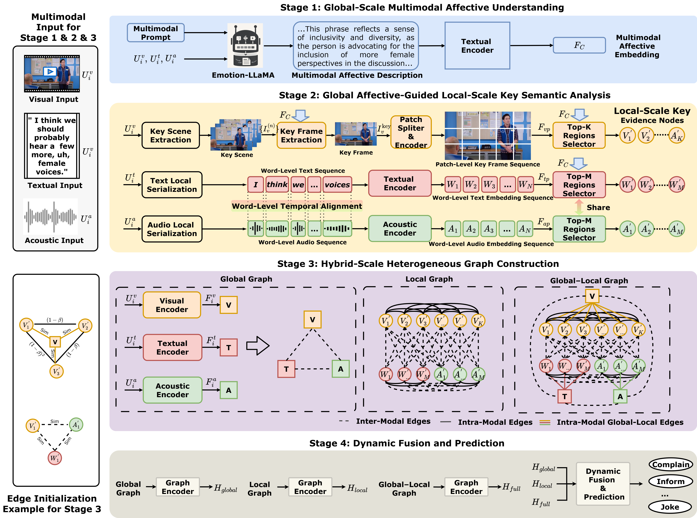

H²GF-Net
Hybrid-scale Heterogeneous Graph Fusion for Multimodal Intent Recognition
Abstract
Multimodal Intent Recognition (MIR) aims to infer a speaker’s communicative intent by integrating heterogeneous
textual, acoustic, and visual signals. However, intent-related cues are often distributed across fine-grained
local variations and global semantic representations, making it challenging for existing approaches to explicitly
model cross-modal and local-global dependencies within a unified framework. To address this challenge, we propose
the Hybrid-scale Heterogeneous Graph Fusion Network (H$^2$GF-Net), which integrates affective semantic prior–guided
local key information selection with progressive hybrid-scale heterogeneous graph modeling for multimodal intent understanding.
Specifically, the model first performs global-scale multimodal affective semantic understanding by generating high-level
affective-intent semantic descriptions, which serve as semantic priors beyond conventional emotion features. Guided by these
priors, H$^2$GF-Net explicitly selects intent-relevant local units across textual, acoustic, and visual modalities, enabling
precise localization of critical multimodal cues. Furthermore, a progressive hybrid-scale heterogeneous graph is constructed
to capture dependencies between local and global representations as well as cross-modal interactions, and these graph representations
are integrated through structure-aware graph fusion to support intent prediction. Experimental results demonstrate that the proposed
method consistently outperforms state-of-the-art approaches on a benchmark dataset, while additional generalization evaluations
further verify its robustness under extended evaluation settings.
Model Architecture

Demo Examples
Multimodal Input
Multimodal Affective Description (Stage1)
Variables (Stage2)
Final Prediction
Case 1
Video
Text
“Okay, anyway, I need to get a head count so I know who’s coming.”
Audio
Bot's message:' Based on the video provided, the person in the video is expressing a mix of emotions,
including: 1. Determination: the person's facial expression is focused and determined, with a slight furrowed brow, indicating a sense of purpose and resolve.
2. Frustration: the person's tone of voice is somewhat irritated and frustrated, as they mention the need to get a head count to know who's coming.
3. Curiosity: the person's expression also shows a hint of curiosity, as they ask for a head count, which suggests a desire to understand the situation better.
The emotions expressed in the video reflect a mix of frustration and determination, with a hint of curiosity.
These emotions could be interpreted as the person trying to navigate a challenging situation while still maintaining a sense of purpose and resolve.
Top-M Text (5%)
Top-K Keyframe (10%)

Head Count
Top-K Keyframe (10%)
Ground Truth: Inform
H²GF-Net: Inform
MAG-BERT: Ask for help
MuLT: Taunt
MISA: Ask for help
TCL-MAP: Ask for help
H²GF-Net: Inform
MAG-BERT: Ask for help
MuLT: Taunt
MISA: Ask for help
TCL-MAP: Ask for help
Case 2
Video
Text
“Okay, anyway, I need to get a head count so I know who’s coming.”
Audio
Bot's message:' In the video, the person's facial expressions and vocal tone are:
1.Facial expressions: the person has a neutral expression, with a slight frown and furrowed brows, indicating a sense of skepticism or concern.
2.Vocal tone: the person's voice is calm and measured, but with a hint of hesitation or reservation, suggesting that they are not entirely convinced or supportive of the idea being discussed.
The intended meaning behind these words is that the person does not think it is appropriate or justifiable for anyone to have that much power or control over others.
This reflects a sense of unease or discomfort with the concentration of power in the hands of a single individual or group.
The emotion underlying this statement is likely distrust or skepticism.
Top-M Text (5%)
Top-K Keyframe (10%)

Anyone Power
Top-K Keyframe (10%)
Ground Truth: Oppose
H²GF-Net: Oppose
MAG-BERT: Complain
MuLT: Criticize
MISA: Complain
TCL-MAP: Criticize
H²GF-Net: Oppose
MAG-BERT: Complain
MuLT: Criticize
MISA: Complain
TCL-MAP: Criticize
Case 3
Video
Text
“Okay, anyway, I need to get a head count so I know who’s coming.”
Audio
Bot's message:' Based on the video provided, here are my observations:
Facial expressions: 1.The person in the video has a neutral facial expression, with a slight smile on their face. 2.They are looking directly at the camera with a calm and relaxed demeanor.
Vocal tone: 1.The person's vocal tone is friendly and approachable, with a hint of humor. 2.Their tone is also somewhat hesitant or uncertain, as they pause before speaking and use phrases like "uh" and "probably."
Intended meaning: The person in the video is suggesting that they think it would be beneficial to hear more female voices in the conversation.
Emotion: This phrase reflects a sense of inclusivity and diversity, as the person is advocating for the inclusion of more female perspectives in the discussion.
Top-M Text (5%)
Top-K Keyframe (10%)
Anyone Power
Top-K Keyframe (10%)
Ground Truth: Advise
H²GF-Net: Advise
MAG-BERT: Inform
MuLT: Inform
MISA: Inform
TCL-MAP: Inform
H²GF-Net: Advise
MAG-BERT: Inform
MuLT: Inform
MISA: Inform
TCL-MAP: Inform